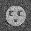

With the "useful" eigenvectors known, we can more efficiently determine the representative clusters. 'CL CLA' only uses Diday's method for clustering, and Ward's criterion for Hierarchical Ascendant Classification (HAC) so the user does not select the clustering criterion. Also the user can not specify the factor weights.
The procedure: clcla.spi invokes 'CL CLA' which reads the CA/PCA files from 'CA S' and creates a dendrogram document file and a dendrogram plot file.
Hints for using: 'CL CLA'K-Means is a method of classification that divides the data into a user specifed number of clusters. Two random images "seeds" are chosen, and their centers of gravity are computed. A partition is drawn down the middle between the centers, the new centers of gravity are computed, and the process is repeated for a given number of times. The final result is VERY dependent on which image seeds are the first chosen.
Because our faces data set is synthetic, we know the exact number of classes and exactly which images are identical (except for the random noise). The output discussed here was obtained with 8 classes, using factors 1-3, and an uniform factor weight of 1.0 for all three factors. (NOTE: The pictures were from a data set with somewhat different noise from other runs discussed in this tutorial.)
The procedure: clkm.spi invokes 'CL KM' and creates class averages for the specified number of classes.
Hints for using: 'CL KM'The doc file: clkm_453_doc was produced by a run of 'CL KM' with the above input values with a random number seed of 453. The third column describes the image number and the fourth column is the class that 'CL KM' placed the image in. Images 1-10 were all placed in cluster 6, which is what we expect because they are all noisy images of the same protoimage. 'CL KM' kept the images from the same protoimage clustered together somewhat, except for the last ten images. However, it preferred to place images 11-20 and 31-40 in the same cluster, instead of each giving them each their own cluster. The average image for images 11-20 and 31-40 are shown below. They differ by their mouth size.

The doc file: clkm_789_doc was produced by a run of 'CL KM' exactly same as the previous run, except with a random number seed of 789. Once again, most images were placed into the correct protoimage cluster correctly, except for the last few images. But in addition to images 11-20 and 31-40 being clustered together, images 1-10 and 21-30 were placed in the same cluster as well. This clearly demonstrates that K-means is highly dependent on the first image chosen, and should be used with extreme caution. Below are the average images for 1-10 and 21-30.
The doc files: clkm_SEQ_453_doc and clkm_PIX_453_doc are outputs from 'CL KM' being run on the same data as above, but using the SEQ and PIX files, respectively. The clkm_PIX_453_doc.dat file is 95Kb in size. The results for the SEQ run should be the same result as the previous runs, because it is still comparing images. However, the PIX results are expected to be different because it is trying to place the PIXELS in eight different classes.
Source: docs/techs/classif/ca-otherops.html Last update: 06 Feb 2013
{kind=link}